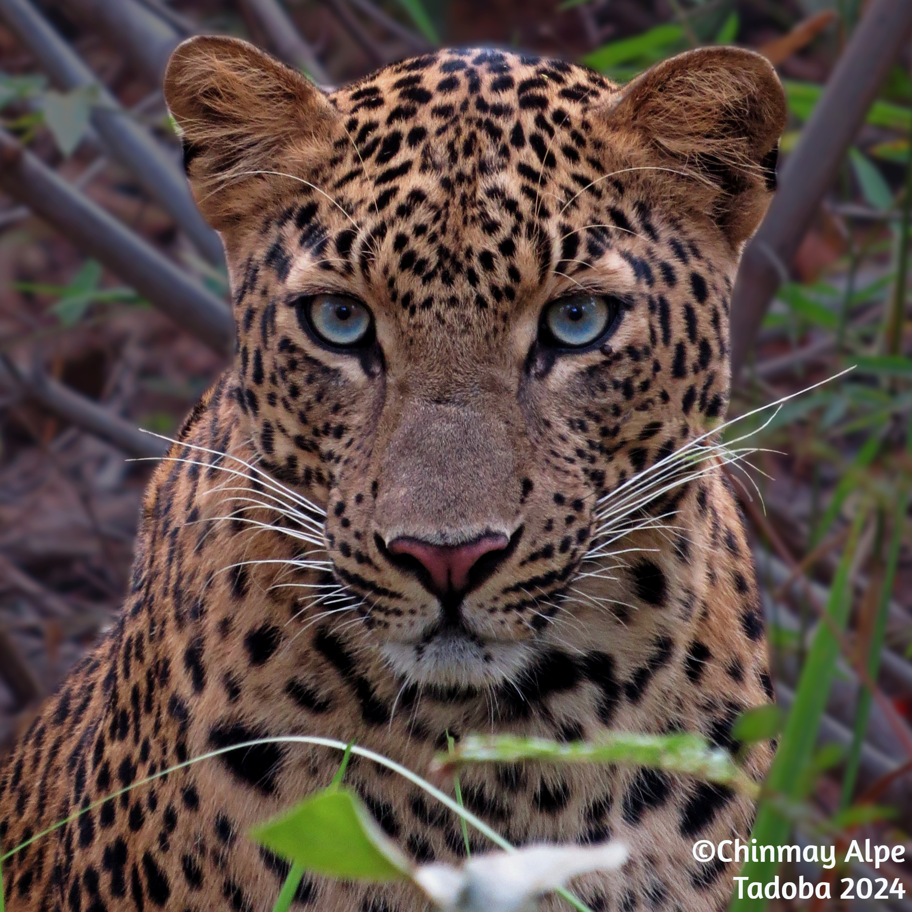
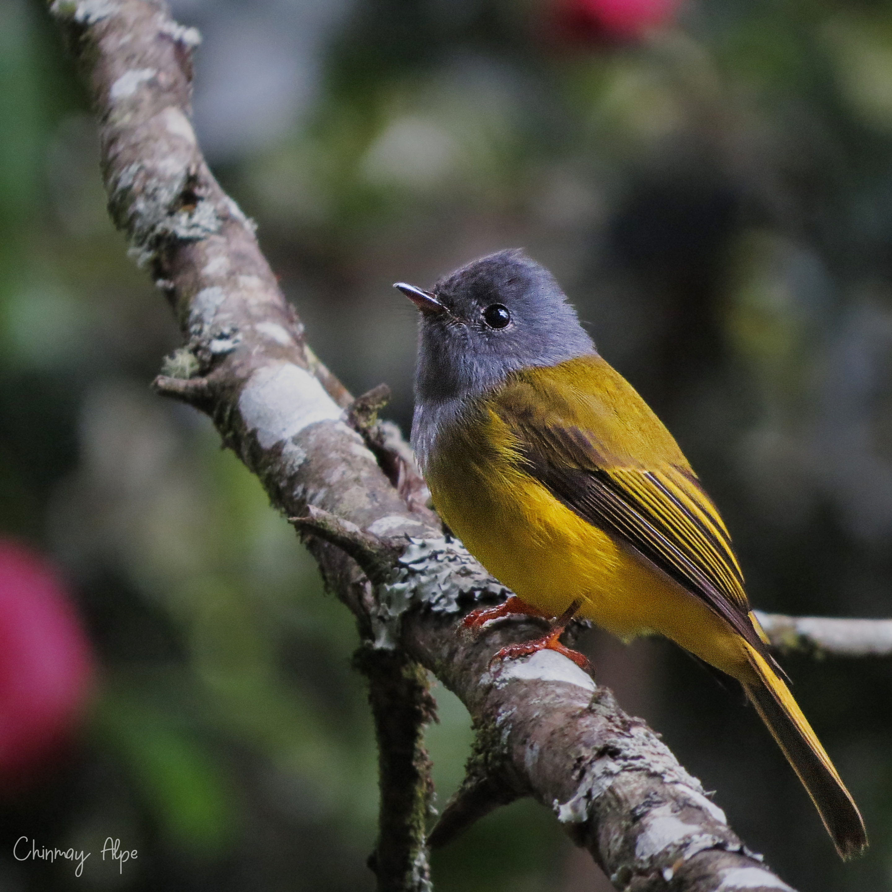
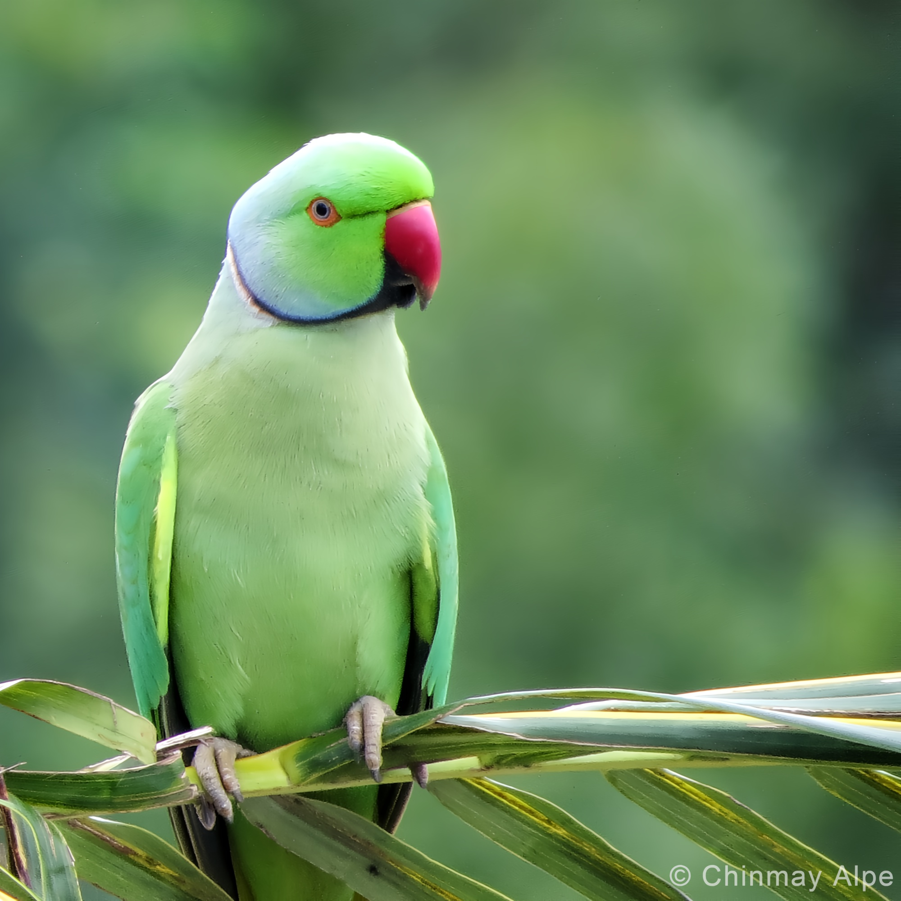
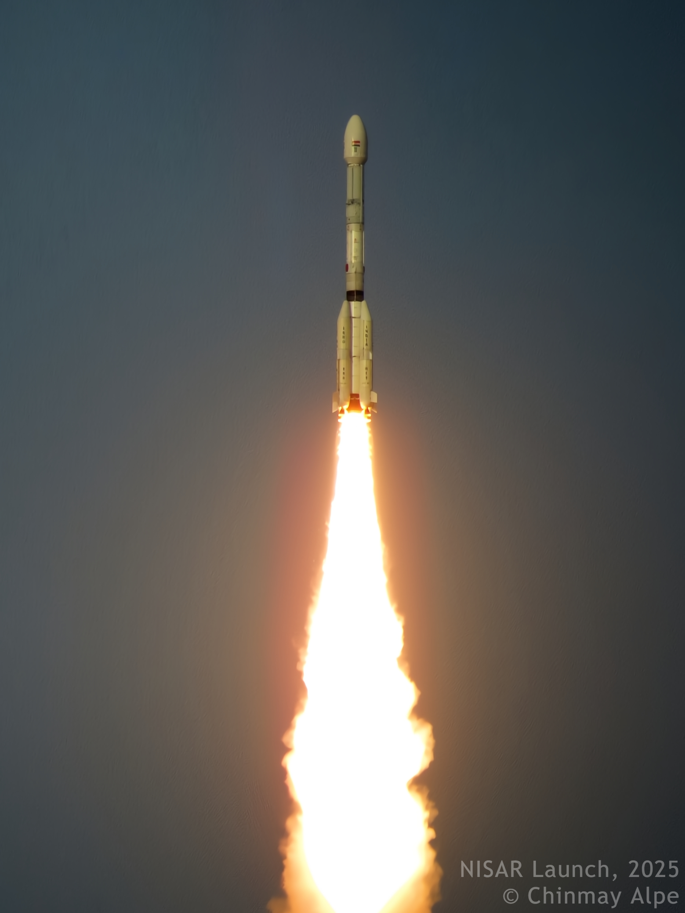
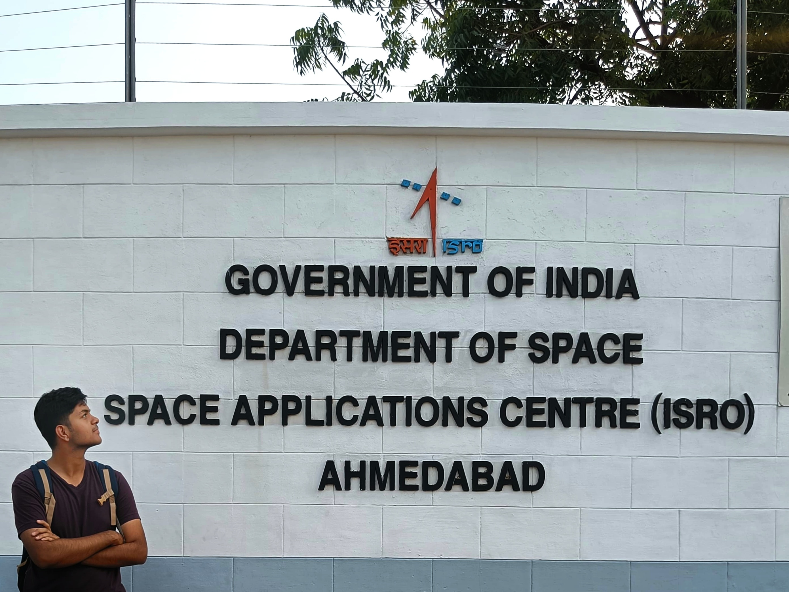

Hey, I'm
Chinmay Alpe
Electronics Engineer & Technology Enthusiast
Research Engineer at Pramatra Space, building quantum communication systems for satellites. I also write about ideas, photograph birds, and stare at the sky a lot.

Hey, I'm
Electronics Engineer & Technology Enthusiast
Research Engineer at Pramatra Space, building quantum communication systems for satellites. I also write about ideas, photograph birds, and stare at the sky a lot.
I'm a Research Engineer at Pramatra Space, working on quantum key distribution (QKD) systems for CubeSat payloads in low Earth orbit. I hold a B.E. in Electronics & Telecommunication Engineering from PICT, Pune with a CGPA of 9.45/10.0.
My career spans ISRO's Space Applications Centre, IISc Bangalore's Quantum Technologies Lab, and the space-tech industry — building FPGA-based systems, quantum readout hardware, and space-grade electronic payloads at the intersection of quantum physics and engineering.
Outside of engineering, I volunteer as a teaching mentor for underprivileged school children, write on philosophy and ideas, pursue bird-watching, photography, and sketching.


Graduated with distinction. Sensing Lead & Technical Team Member, PICT Robotics Club. Participated in DD Robocon 2019–20 at IIT Delhi.
Leading development of electronic systems for a Quantum Key Distribution payload onboard a CubeSat. Includes post-processing algorithms for Key Reconciliation Protocols and circuit design for the full Xilinx SoC-based space payload.
Dual-channel Time-to-Digital Converter on a Kintex-7 FPGA for time-of-flight measurement of entangled photons with 20 ps precision — 15× more precise than the legacy design — for ISRO's entangled photon quantum radar.
Hardware-accelerated readout scheme for measuring the purity of a microwave single-photon source and characterising a Josephson Parametric Converter via g² correlation measurement at IISc's Quantum Technologies Lab.
High-speed, low-resource CORDIC algorithm for a quantum computing readout system on RFSoC hardware. Matched IP-ready solutions while delivering significantly better clock rate and configurability.
Autonomous navigation algorithms for an agricultural robot in a greenhouse, with a robotic arm for identifying and picking ripe tomatoes using Computer Vision. Simulated end-to-end in ROS and Gazebo.
Solar-powered surveillance robot for extended monitoring of critical sites using Night Vision, stealthy operation, and a remote control station for real-time surveillance.







Thoughts on philosophy, ideas, consciousness, technology, and the questions I can't stop thinking about. Writing is how I make sense of things.
Read the blog →Birds, skies, and quiet moments. I photograph what makes me stop and stare — mostly with binoculars around my neck.
View on Instagram →Have a project in mind, want to collaborate, or just want to say hi? My inbox is always open.
ccalpe2000@gmail.com